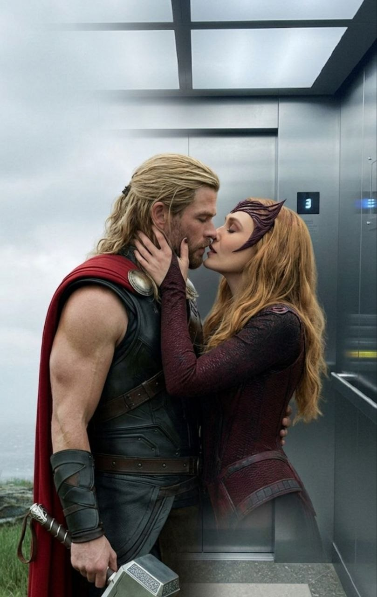

Quién diría que todo empezaría en Telegram… entre mensajes, risas y conversaciones que se alargaban sin darnos cuenta. Y aunque la distancia nos separa físicamente, siento que estamos más cerca.
Me gusta pasar tiempo contigo cuando vemos TikTok, jodemos en los grupos, cuando jugamos Roblox. Eres una persona increíble, cuando hablo contigo me siento feliz.
Te amo tanto bb que haría cualquier cosa por ti. Gracias por ser mi novia Valeria ❤️